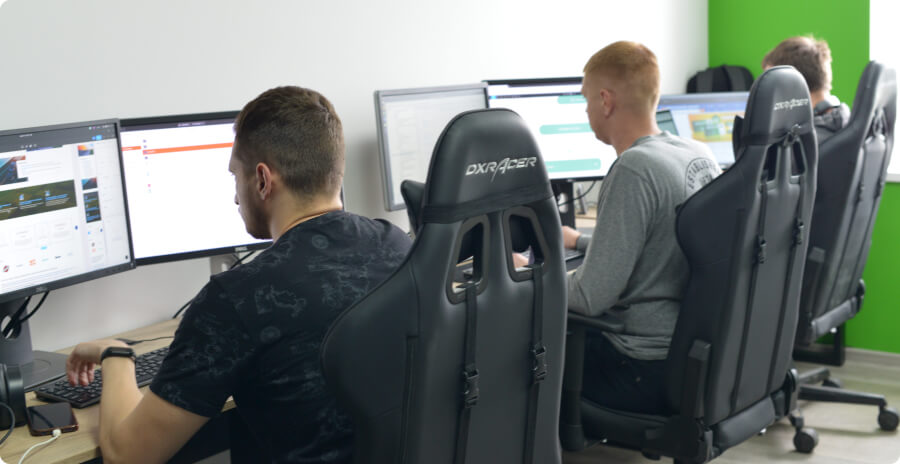

Вебстудія №1 з розробки сайтів
Приєднуйтесь до нашої IT-команди
Відкрийте нові перспективи кар'єрного зростання, приєднавшись до нашої інноваційної IT-команди, яка відкриває двері до безмежних можливостей
Дізнатися більше
Перевірка тестового завдання
